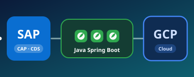
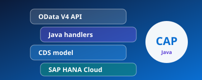
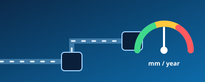
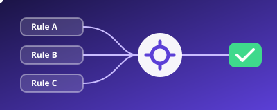

Hello, I'm
Vinay J
SAP CAP (Java) Developer
>
I build secure, cloud-native applications on SAP BTP with the CAP Java SDK, CDS, OData and Spring Boot, backed by SAP HANA Cloud and integrated with S/4HANA.
- 3.5+Years on SAP BTP & Production
- 100+REST / OData services
- 50+CDS entities, 10 modules
- ~50%Faster HANA responses
About
I'm an SAP CAP (Java) developer based in Bangalore, India, with 3.5+ years of experience delivering cloud-native applications on SAP BTP and in production. I work with CAP, the CAP Java SDK and Spring Boot, with strong CDS modeling on SAP HANA Cloud.
I'm the technical point of contact for an Asset Integrity Management platform for Oil & Gas. There I've designed 100+ REST and OData services, secured them with OAuth2, JWT and XSUAA, and integrated them with S/4HANA through the Destination and Connectivity services. I also take part in design reviews and have mentored 10+ junior engineers. I received a Performance Excellence Award for outstanding performance, dedication and valuable contributions to the organization.
I currently lead backend development for AsInt Edge, developing applications on GCP and SAP using Java Spring Boot. On SAP, I build with CAP and CDS. I also handle client support and production management on the SAP stack.
Languages: English, Kannada, Telugu, Hindi, Marathi · Outside work: cricket, sketching, gaming and movies.
Technical Skills
BTP Services
Security & Deploy
Languages & Frameworks
Data
CI/CD & Testing
Ways of Working
Experience
SAP CAP (Java) / Backend Developer · AsInt, Inc.
March 2023 – Present · Bangalore, IndiaTechnical point of contact for an Asset Integrity Management platform (Oil & Gas) on SAP BTP.
- Currently leading backend development for AsInt Edge: developing applications on GCP and SAP using Java Spring Boot. On SAP, building with CAP and CDS.
- Provide client support and handle production management on the SAP stack.
- Built and maintained cloud-native apps with SAP CAP (Java) and the CAP Java SDK on SAP BTP. Designed 100+ REST APIs and OData services and modeled 50+ CDS entities across 10 modules.
- Developed business logic in Java / Spring Boot. Created CDS artifacts and database models on SAP HANA Cloud and integrated S/4HANA for data exchange.
- Tuned HANA Cloud models and HANA SQL queries, cutting response time by ~50%.
- Configured auth with OAuth2, JWT, XSUAA and SAP Identity Services. Integrated third-party and on-premise systems via Destination and Connectivity services.
- Implemented scheduled processing (Job Scheduler) and event-driven messaging (Event Mesh, Kafka, hundreds of events/day). Deployed and managed apps on Cloud Foundry.
- Built a modular calculation framework (TMIN, MAWP, corrosion rate, FFS, RBI) using CompletableFuture / ExecutorService, with transactional boundaries and idempotent validation for concurrency-safe consistency.
- Ran CI/CD (Maven, JFrog, Jenkins / GitLab CI) with unit testing and code reviews. Contributed to design reviews and mentored 10+ junior engineers.
Key Projects

AsInt Edge Apps Current
Employer product · Backend lead
I lead backend development for AsInt Edge, developing applications on GCP and SAP using Java Spring Boot. On SAP, I build with CAP and CDS.
About AsInt Edge
CAP Store: a sample CAP Java app Interactive
Built for this portfolio
A small full-stack online store: a UI5 storefront on a CAP Java service, with stock checks and volume discounts. Place an order and call the OData API live. Free to reuse.
Open the project →
Asset Integrity Management System
Oil & Gas · EAM / APM platform
100+ CAP OData/REST services bridging S/4HANA and HANA Cloud, secured with XSUAA. Scalable workflows built on Event Mesh, Kafka and CompletableFuture.

Asset Maintenance Recommendation System
Rule-based recommendation engine
Extensible engine with modular services and async processing that decouples computation from request–response flows.

Maintenance Spend Planning System
Budget planning workflows
Budget-planning workflows with data persistence, validation rules, and calculation components for aggregation, adjustments and approval-stage validations.
Achievements
Recognition
Performance Excellence Award
Awarded for outstanding performance, dedication and valuable contributions to the organization.
Leadership
Leading the AsInt Edge backend
Developing applications on GCP and SAP using Java Spring Boot, with CAP and CDS on the SAP side.
Collaboration
Working across teams
Delivering with architects, functional consultants and business stakeholders.
Outreach
Marketing the apps we build
Helping promote the apps, so users and clients know what they can do.
Ownership
Client support & production management
Supporting clients and managing production on the SAP stack.
Mentoring
Mentored 10+ junior engineers
Helped junior engineers grow, alongside code and design reviews.
Contact
Let's build something
great.
Send a message, or reach me directly. I reply fast.
Prefer a quick chat? Message me on WhatsAppBangalore, India